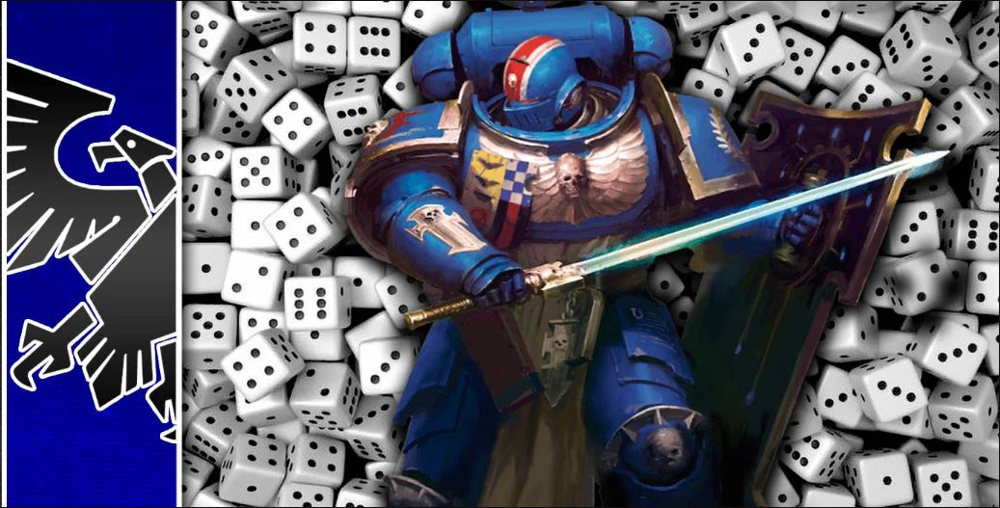
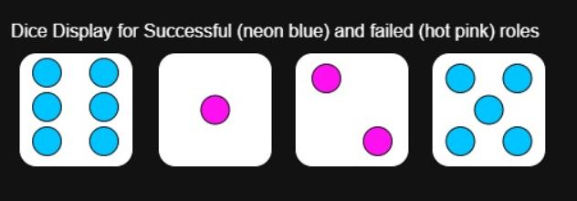

d6multiple's Purpose:
This website was created to be simple dice roller for Warhammer 40,000 and Warhammer 40,000 Kill Team. I have Astra Militarum, Imperial Knights, and Imperial Agent army lists. So I am no stranger rolling large amounts of dice at one time. I wanted to create a utility website that would help speed up nthe process of rolling large amounts of dice. It is really fun to roll 30 dice at once, but it can drastically slow down the pace of a game. Forcing opponents to sit around and wait until it's finally their turn to play again. This utility website will help to remedy that by helping games run smoothly and as quickly as possible.
